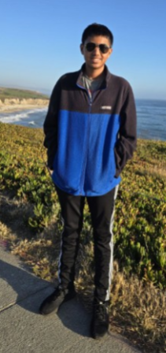

Our Team
Aditya Chandrasekhar
Aditya Chandrasekhar is a senior at Dougherty Valley High School and is a math enthusiast. He has qualified for the USAJMO twice, and has placements in college competitions. Aditya is also interested in physics and competitive programming. In his spare time, he enjoys powerlifting, listening to music, and playing with his dog.

Vedanth Dala
Vedanth Dala is a junior at Dougherty Valley High School. He loves math and physics, having qualified for the AIME twice and for the USAPhO once before. When not working on math or physics puzzles, Vedanth likes reading, sleeping, watching movies, and playing tennis.